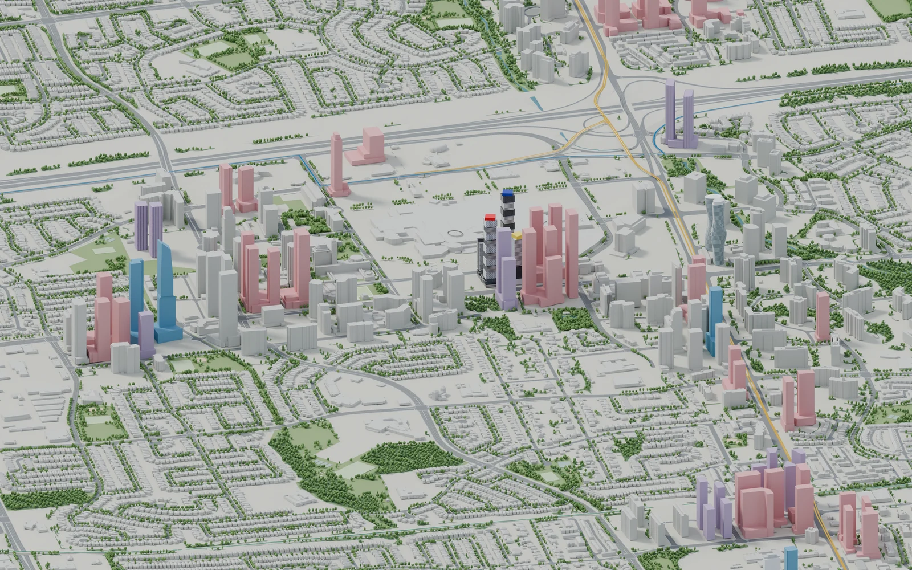
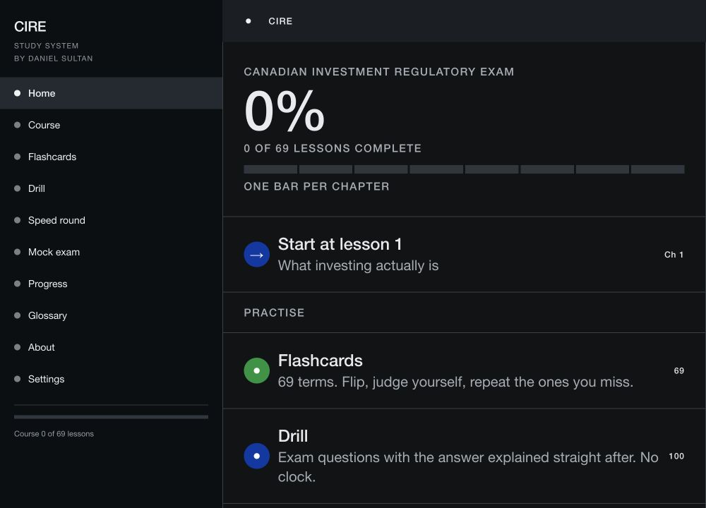
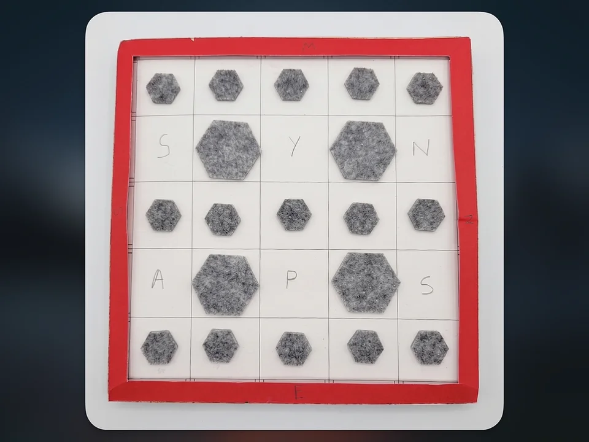
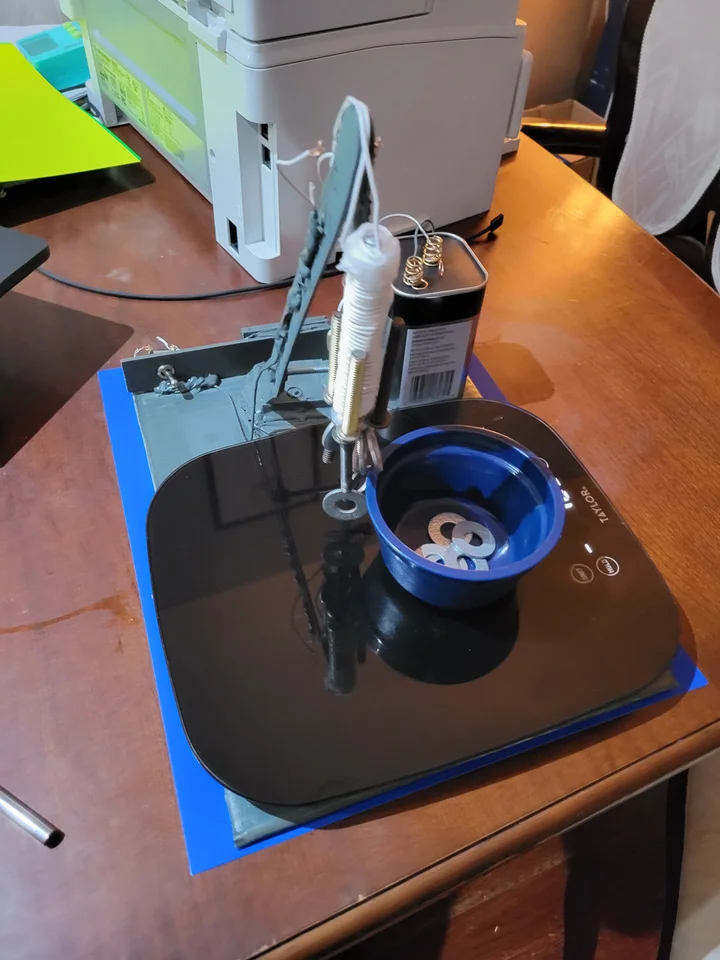

Mac utility
Caps Lock for Raycast
A small command that toggles native Caps Lock, even when the physical key has another job. Published in the official Raycast Store.
View in the StoreDaniel Sultan · Greater Toronto Area

Websites, 3D models
and learning tools.
I build things that make complicated ideas easier to explore.
Right now, that means Future Mississauga, an interactive city atlas, and two free study tools: InvestmentRegulation.ca and IFC Prep.

Current project · 3D visual atlas
I taught myself Blender to understand how Mississauga’s buildings and transit fit together. The atlas now covers 17 areas, with an interactive 3D explorer, existing-and-proposed views, and sources you can follow.
It keeps growing through drawings, reference photographs and local feedback. October’s release added Churchill Meadows and more detailed building studies, with a public record of corrections and remaining approximations.
An independent project, not an official City forecast. Retained proposals may change or never be built.
02 / Learning tools · Free and open source
InvestmentRegulation.ca started with a simple idea: explain the basics before asking someone to memorize the rules.
I built the first version over three weeks. It works from “What is investing?” through 69 lessons, with flashcards, practice drills and a 100-question mock exam for the Canadian Investment Regulatory Exam.
New in October
A separate companion for the Investment Funds in Canada course: 54 lessons, 18 workshops, 324 practice questions and 162 flashcards. Study in the browser, download it for offline use, or print a companion.
Both tools are independent study resources. IFC Prep is not CSI-endorsed or a replacement for the purchased course.

Mac utility
A small command that toggles native Caps Lock, even when the physical key has another job. Published in the official Raycast Store.
View in the StoreBrowser-local experiment
Turn loose notes into groups you can review and export as Markdown. A small model runs in the browser, with you deciding what stays together.
Try the notes toolModel refinement
A before-and-after study shows how architectural references changed the Winding Trail model, with the remaining estimates clearly noted.
See the processStudy a board of shapes, cover it, then rebuild it from memory. I made the board and pieces, tried different grid sizes with classmates, and changed the scoring to reward accuracy instead of a perfect attempt.
Read the build story
A small electromagnetic crane became a way to test wire, current and core materials. I published the experiment, results and prototype photographs together.
Explore the experiment
A common thread
Make the idea easier to understand. Leave the work open to inspection.
Financial sales and high-volume service have taught me to explain things clearly, listen carefully and follow through when someone needs help.
Classroom support, coaching, camp leadership and tutoring: different settings, but the same need for patience, clear instructions and a dependable routine.